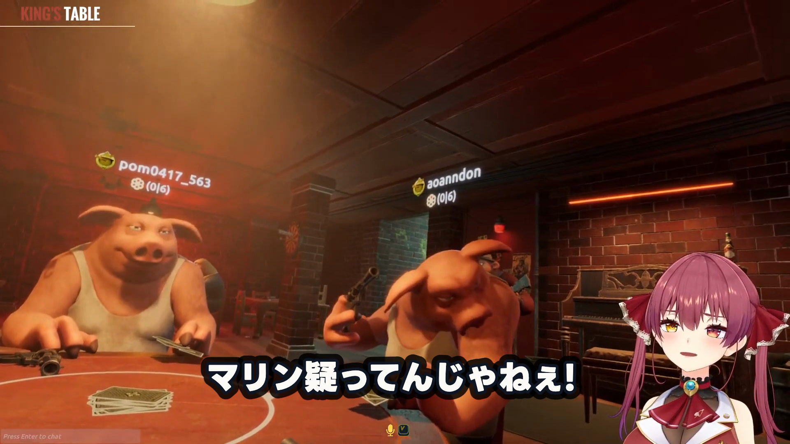
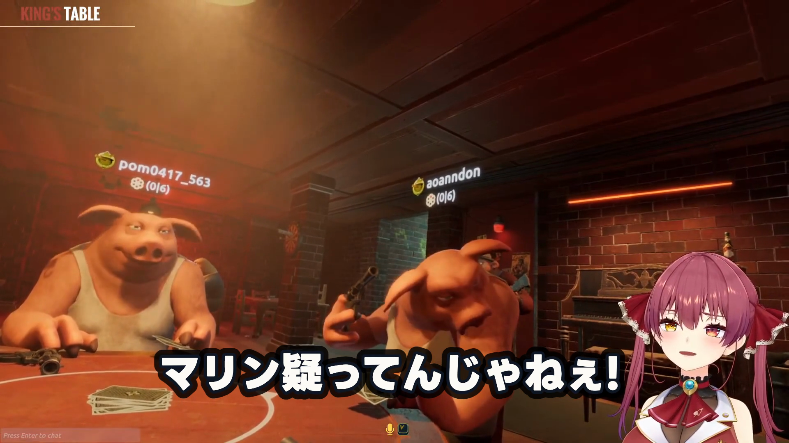
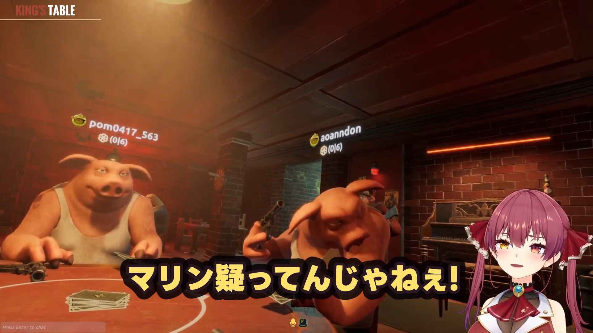
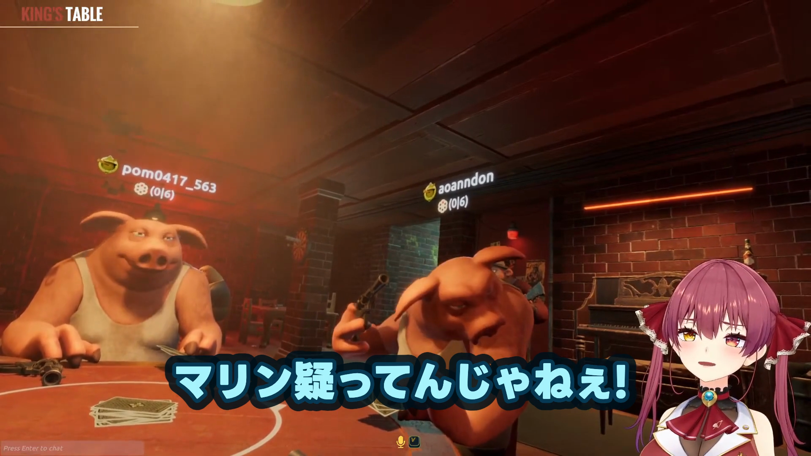
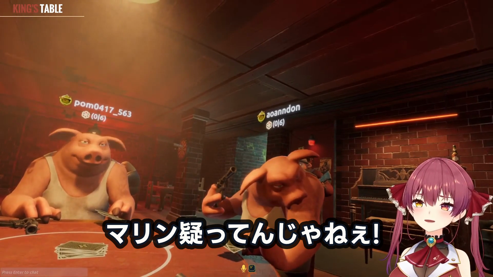
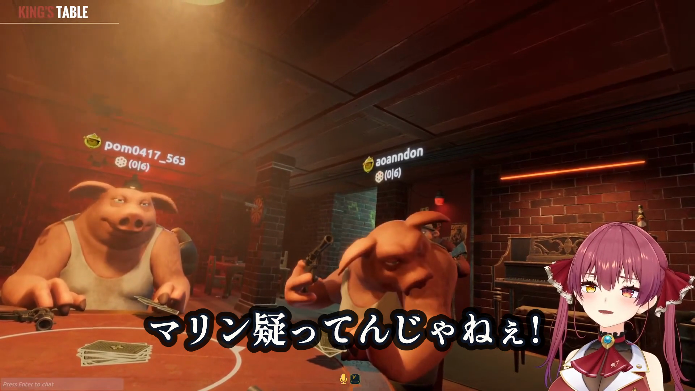

候補0 現在値

LINE Seed JP ExtraBold / 96px / #FFFDF8 / 縁 #111827 8px / 光彩 #000000 12px・82%
人間合格済みの現行字幕を比較の基準に固定する。
全候補は同じ先頭8 cue・375 frame（12.5秒）。静止画は全てframe 145です。候補0が人間合格済みの現在値です。
LINE Seed JP ExtraBold / 96px / #FFFDF8 / 縁 #111827 8px / 光彩 #000000 12px・82%
人間合格済みの現行字幕を比較の基準に固定する。

LINE Seed JP ExtraBold / 80px / #FFFDF8 / 縁 #111827 8px / 光彩 #000000 12px・82%
画面情報を隠す量を大きく減らした端の候補として、可読性の下限寄りを確認する。

LINE Seed JP ExtraBold / 100px / #FFFDF8 / 縁 #111827 8px / 光彩 #000000 12px・82%
現行から少しだけ視認性を強め、長い一行も安全域に残す穏当な候補。

LINE Seed JP ExtraBold / 96px / #FFE36E / 縁 #2B1820 10px / 光彩 #080407 18px・86%
強い発話の勢いを出す高彩度側として、既存の暖色表現値を字幕位置で比較する。

LINE Seed JP ExtraBold / 96px / #A8F5FF / 縁 #083B55 10px / 光彩 #00111B 17px・86%
白に近い読みやすさを残しつつ、配信画面から分離しやすい寒色の穏当案。

LINE Seed JP Bold / 96px / #FFFDF8 / 縁 #111827 8px / 光彩 #000000 12px・82%
現行ExtraBoldの骨格を保ったまま太さだけを一段軽くし、密度差を比較する。

Shippori Mincho Bold / 96px / #FFFDF8 / 縁 #111827 8px / 光彩 #000000 12px・82%
明朝体への大きな振れ幅を置き、勢い重視の字幕に品位方向が合うかを確認する。
不合格で除外した候補はありません。